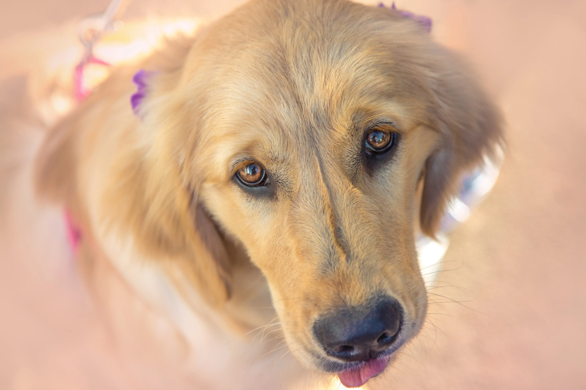
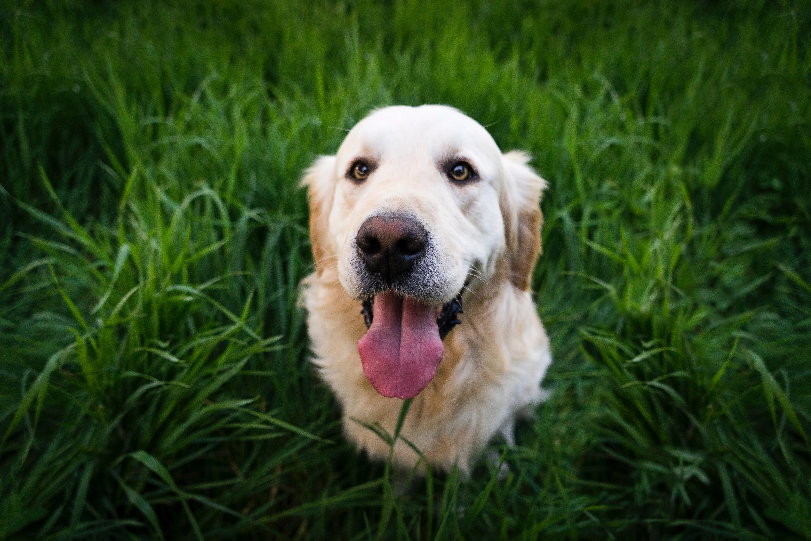
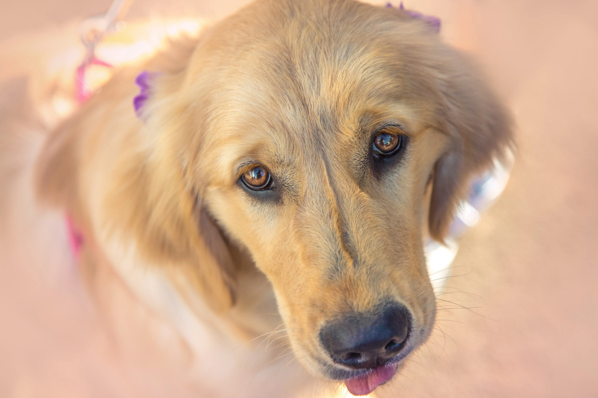
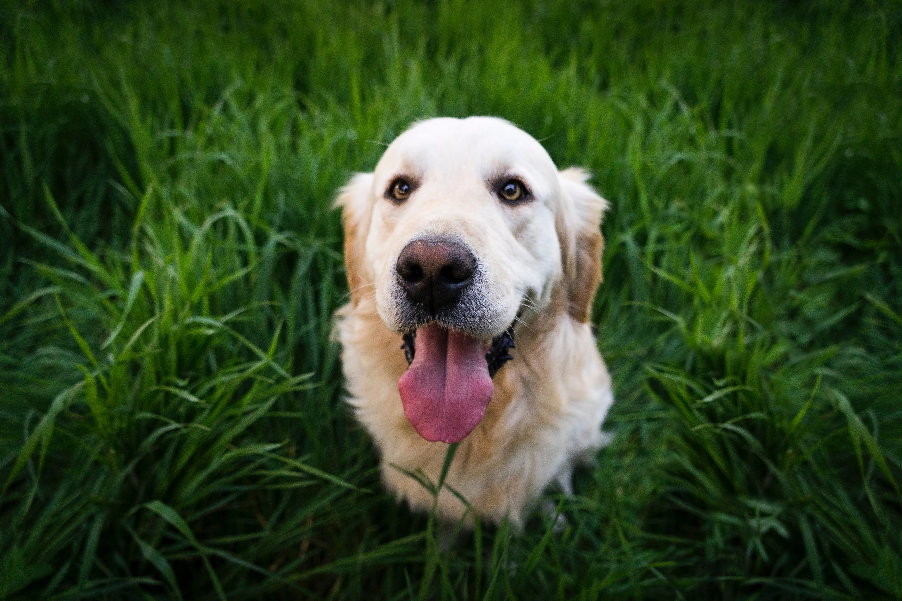

VETERINARIA
WE LOVE DOGS
Sobre nosotros.
Bienvenidos a nuestra página web GOLDENDOG, donde nos especializamos en brindar atención médica y cuidado a esta maravillosa raza canina.
Somos un equipo de veterinarios apasionados por los perros y comprometidos con su bienestar y salud. Nuestra experiencia y conocimiento en el cuidado de las razas nos permite ofrecer servicios de alta calidad y personalizados a cada uno de nuestros pacientes.
En nuestra clínica, contamos con un ambiente cálido y acogedor para que tanto usted como su mascota se sientan cómodos y tranquilos. Ofrecemos una amplia gama de servicios, desde exámenes de rutina hasta cirugías y tratamientos avanzados.
Tipo americano: Es más alto y menos fornido que el tipo británico. El pelaje es denso y repelente al agua, en distintos tonos de oro brillante, con flecos moderados.
Tipo británico: Su hocico es más ancho y corto, su frente es más cuadrada y sus piernas y cola son más cortas.
Tipo canadiense: Es similar en apariencia al americano, pero tiene algunas diferencias notables en cuanto a su pelaje. El pelo es comúnmente menos denso y más oscuro que en el golden americano, y también puede tener más ondulaciones.
 



Temperamento e inteligencia
El golden retriever es conocido por su temperamento amable, confiado y amigable. Son excelentes mascotas familiares y pacientes con niños si se socializan y entrenan adecuadamente. No son buenos perros guardianes debido a su naturaleza amistosa.
Adiestramiento
Es un perro activo con comportamiento paciente, apto para la caza y el entrenamiento en pruebas de obediencia y desempeño. Es sociable y calmado, adecuado para ser perro guía, de asistencia y rescate. Responden bien al entrenamiento positivo y se debe evitar sobrecargas de trabajo.
Cuidado
Son perros activos que necesitan ejercicio diario y estimulación mental para evitar comportamientos destructivos. Requieren cepillado semanal y limpieza regular de las orejas para mantener su pelaje y salud. Pueden mudar pelo dos veces al año.
Salud
El promedio de vida del Golden Retriever es de 12 años. Debido a que son susceptibles a enfermedades específicas, un criador responsable evalúa la salud de los padres y realiza revisiones veterinarias anuales. También se recomienda controlar el sobrepeso y pedir pruebas de salud al comprar un cachorro.